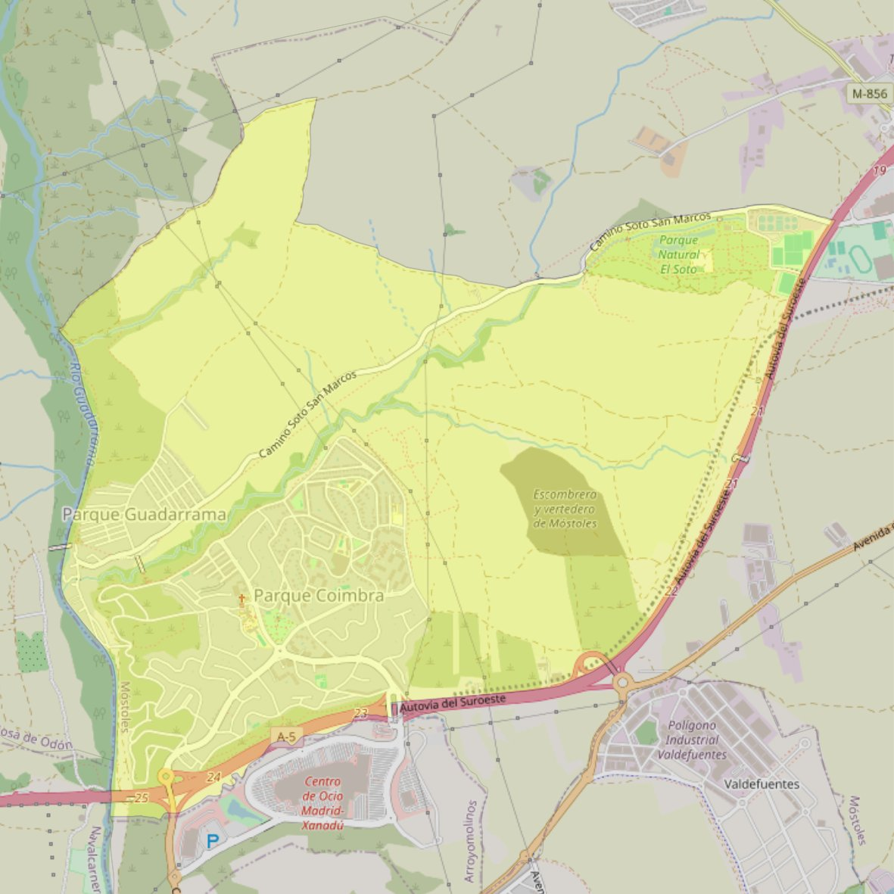

San Simón de Rojas

- Arciprestazgo
- Móstoles
- Población
- Móstoles
- Dirección postal
- c/ Arces, 27 (Parque Coimbra)
- Código postal
- 28935
- Extensión
- 11,28 km² (1.128 ha)
- Teléfono
- 916 466 061
- Correo electrónico
- info@simonderojas.org
Arciprestazgos y parroquias de la Diócesis de Getafe
